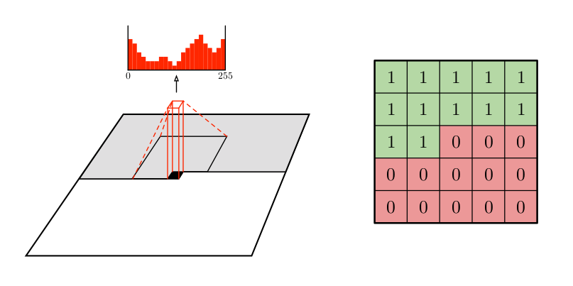
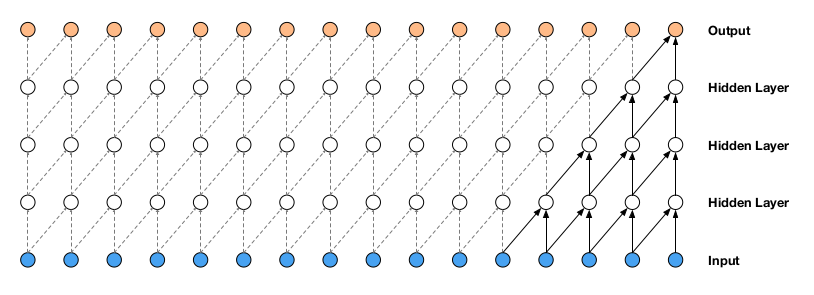
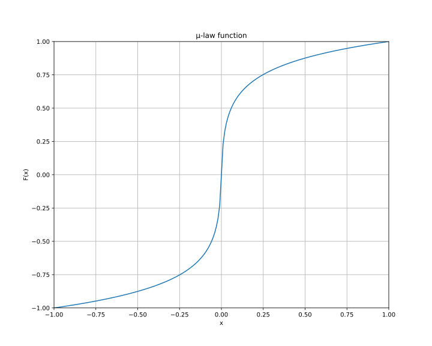
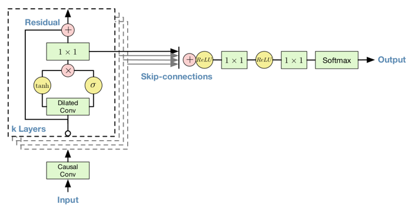
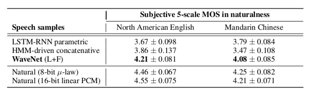
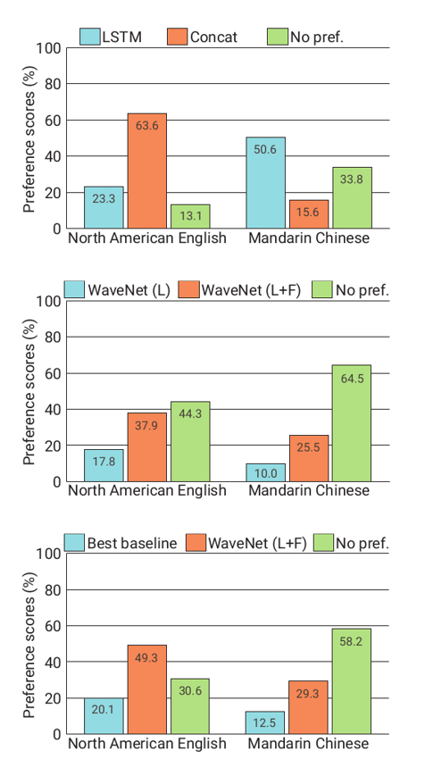
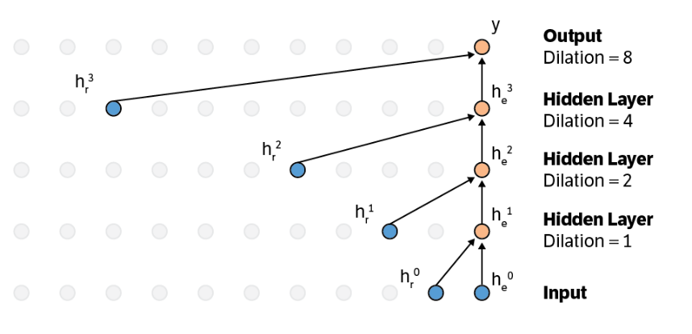

WaveNet
A Generative Model for Raw Audio
Tassos Manganaris
March 2023
Introduction
- Exploring "raw audio generation techniques, inspired by … autoregressive
generative models that model complex distributions"
- PixelCNN (van den Oord et al. 2016)
- RNNs (and 1-D convolutions) for Language Models (Jozefowicz et al. 2016)
- "Modeling joint probabilities … as products of conditional distributions"
- Can similar approaches succeed in generating wideband (>16,000hz) raw audio waveforms?
WaveNet
\(p(\mathbf{x})=\prod_{t=1}^{T} p\left(x_{t}\mid x_{1},\ldots,x_{t-1} \right)\)
- \(p\left(x_{t}\mid x_{1},\ldots,x_{t-1}\right)\) is modelled by a stack of convolutional layers, like with PixelCNN
- "The output of the model has the same time dimensionality as the input."
- "Outputs a categorical distribution … with a softmax layer"
- Trained to optimize log-likelihood
Causal Convolutions
- Convolutions that do not violate the ordering of the model.
- In PixelCNN, implemented with masking.
- In WaveNet, implement by "shifting" output.


Dilated Causal Convolutions
- A convolution where the filter skips input values with a certain step.
- Stacked with exponential dilation factors up to a limit, then repeated.
- Receptive field grows exponentially with number of hidden layers.
\(1, 2, 4, \ldots 512, 1, 2, 4, \ldots 512, 1, 2, 4, \ldots 512\)

Softmax Distributions
- PixelCNN used softmax over mixtures of Gaussians.
- A problem: raw audio samples are typically quantized with 16 bits \(\Rightarrow\) \(2^{16}\) probabilities.
- Solution: Quantize according to mu-law. Now effectively encoding the signal with 8 bits (“Mu-Law Algorithm” 2023).

Gated Activation Units + Residual and Skip Connections

\(\mathbf{z}=\operatorname{tanh}\left(W_{f,k}*\mathbf{x}\right) \odot \sigma\left(W_{g,k}*\mathbf{x}\right)\)
"Another potential advantage is that PixelRNNs contain multiplicative units (in the form of the LSTM gates), which may help it to model more complex interactions. To amend this we replaced the rectified linear units between the masked convolutions in the original pixelCNN with the following gated activation unit…"
Conditional WaveNets
- After training, we can generate likely, but incoherent waves.
- Modify the model to include an extra vector for conditioning.
\(p(\mathbf{x}\mid\mathbf{h})=\prod_{t=1}^{T}p\left(x_{t}\mid x_{1},\dots,x_{t-1},\mathbf{h}\right)\)
Global Conditioning
- "A single latent representation h that influences output distribution across all time steps."
\({\bf z}=\operatorname{tanh}\left(W_{f,k}*{\bf x}+V_{f,k}^{T}{\bf h}\right) \odot \sigma\left(W_{g,k}*{\bf x}+V_{a,k}^{T}{\bf h}\right)\)
- Result from \(V_{*,k}^{T}{\bf h}\) is broadcast across time dimension, and \(V\) is like a vector with length
(n_aux).
Local Conditioning
- \(h_t\), a time series of linguistic features. Therefore, WaveNet plays the role of the acoustic model + vocoder.
- Up sample with transposed CNN, so that length of the final time series matches with \(\bf{x}\)
\(\mathbf{z}=\operatorname{tanh}\left(W_{f,k}*\mathbf{x}+V_{f,k}*\mathbf{y}\right) \odot \sigma\left(W_{g,k}*\mathbf{x}+V_{g,k}*\mathbf{y}\right)\)
- \(V_{*,k}\) is a 1x1 convolution for each layer, that take
n_auxchannels and outputsn_quantchannels.
In Code
- From ESPNet:
def _residual_forward( self, x, # series of quantized, one-hot-ed waveform points (B, T, 256). h, # upsampled conditioning tensor (B, n_aux, T) dil_sigmoid, dil_tanh, aux_1x1_sigmoid, aux_1x1_tanh, skip_1x1, res_1x1, ): output_sigmoid = dil_sigmoid(x) output_tanh = dil_tanh(x) aux_output_sigmoid = aux_1x1_sigmoid(h) aux_output_tanh = aux_1x1_tanh(h) output = torch.sigmoid(output_sigmoid + aux_output_sigmoid) * torch.tanh( output_tanh + aux_output_tanh ) skip = skip_1x1(output) output = res_1x1(output) output = output + x return output, skip
Experiments
Multi-Speaker Speech Generation
- Global conditioning for speaker identity (a one-hot vector).
- "able to model speech from any of the [109] speakers"
- "internal representation was shared among multiple speakers"
- "it also mimicked the acoustics and recording quality, as well as the
breathing and mouth movements of the speakers."
speaker-1.wav speaker-2.wav speaker-3.wav speaker-4.wav speaker-5.wav speaker-6.wav
Text-To-Speech

parametric-1.wav concatenative-1.wav wavenet-1.wav tacotron.wav

Music
sample_1.wav sample_2.wav sample_3.wav sample_4.wav sample_5.wav sample_6.wav
"We found that enlarging the receptive field was crucial to obtain samples that sounded musical. Even with a receptive field of several seconds, the models did not enforce long-range consistency which resulted in second-to-second variations in genre, instrumentation, volume and sound quality. Nevertheless, the samples were often harmonic and aesthetically pleasing, even when produced by unconditional models."
Speech Recognition
- 18.8 PER on TIMIT – "…the best score obtained from a model trained directly on raw audio."
- Required a mean-pooling layer after the dilated convolutions, for aggregating activations to coarser frames spanning 10 milliseconds (160× downsampling).
Conclusion
- WaveNets produce raw speech signals with highly-rated naturalness
- Decent Training Time, Slow Generation
- Global conditioning can produce a single model that can be used to generate different voices, different instruments, etc.
- The same architecture shows strong results when tested on a small speech recognition dataset.
Discussion
- General Thoughts…
- Moving closer to end-to-end \(\rightarrow\) increasing generality.
- Pros over recurrent models?
- When training?
- When generating?
- Cons?
High Cost of Generating Sample by Sample
- Hours to generate just one second of audio.
- Solutions?
Eliminate Redundant Computations

Probability Density Distillation
- Use a fully-trained WaveNet model to teach a smaller, more parallel student network (“High-Fidelity Speech Synthesis with WaveNet,” n.d.).
- Train student to match teacher's distribution.